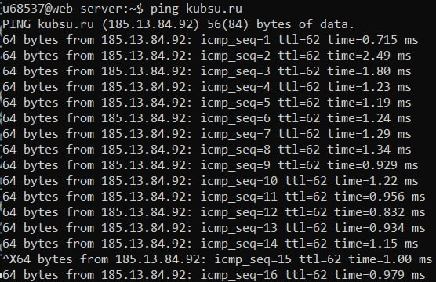
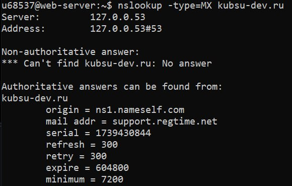
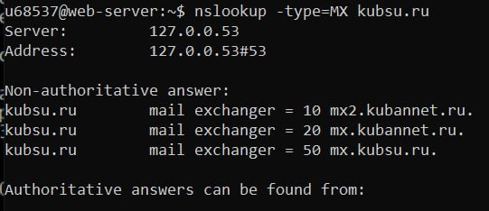
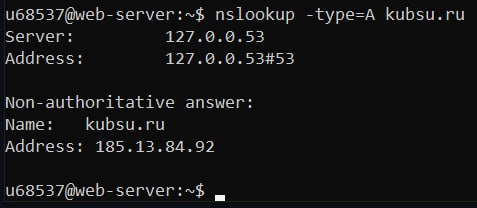
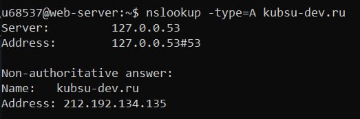
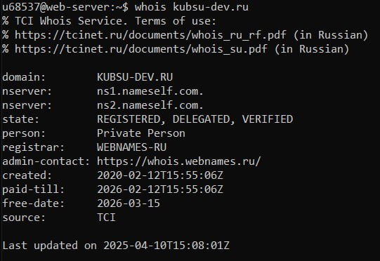
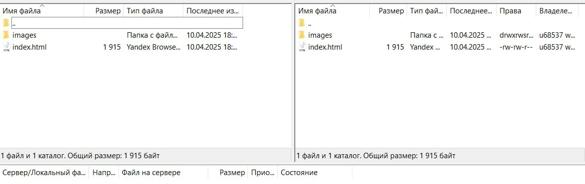

1. С помощью команды ping на учебном сервере узнать IP-адрес веб-сервера
kubsu.ru, сделать скриншот вызова команды ping, добавить скриншот в git-репозитарий задания.

2. С помощью команды nslookup узнать A-записи и MX-записи домена kubsu.ru и
kubsu-dev.ru, добавить скриншоты в git-репозитарий задания.




3. С помощью команды whois узнать дату регистрации домена kubsu.ru и kubsu-dev.ru, добавить скриншоты в git-репозитарий задания.

4. С помощью программы FileZilla или любого другого клиента SFTP соединиться с
учебным сервером с вашим логином и паролем по протоколу SFTP и скопировать на
локальный компьютер файлы задания из каталога www. Сделать
скриншот SFTP-клиента после скачивания файлов, добавить скриншот в GIT и на
страницу.
